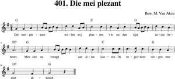

- Tekst: Nieu Amsterdams Liedboeck 1591
- Muziek: Luitboeck van Thysius 1600
1. Die mei plezant willen wij planten
't Is nu den tijd, zodat behoort;
Men ziet nu vreugd aan allen kanten,
De vogelkens zingen met zoet akkoord.
2. Die bloemkens staan zeer wijd ontloken
Al door den dauw en zonneklaar;
Zij staan te velden met zoeter roken,
Komt met uw liefken, paar aan paar.
3. Komt met uw liefken en wilt inhalen
Den mei zeer zoet en wel gebloeid,
Men zal u lonen vrij zonder falen,
Want uit den mei veel liefden groeit.
4. Op! harpen, snaren, wilt triomferen,
En lustig zingen met blij geschal
Voor uw liefs vensterken : 't is haar ter eren;
Dees meientijd gaat boven al.